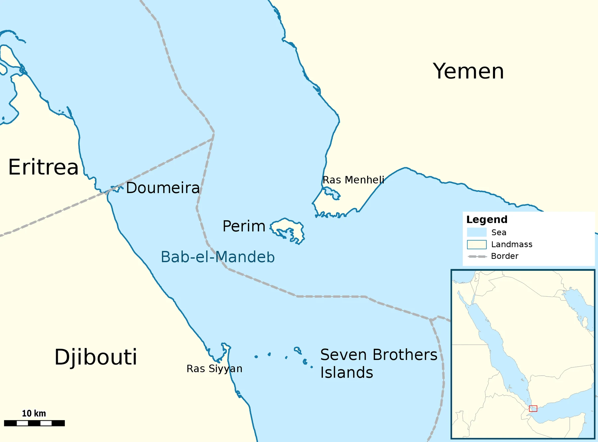

أرشيف رقمي لحكايات طالبات مدرسة المنار القومية للغات للبنات، نستعيد من خلاله بطولات حرب أكتوبر وقصص الأبطال الذين شاركوا في صنع النصر.
في السادس من أكتوبر 1973 بدأت مصر حرب أكتوبر لتحرير سيناء، بعد سنوات من الاستعداد والتدريب والتخطيط. شاركت فيها قوات برية وجوية وبحرية ودفاع جوي، ولكل منها دوره.
لكن الحرب لم تكن أرقامًا وتواريخ فقط، بل كانت أشخاصًا قاموا بمهام حقيقية، بعضها معروف وبعضها لم يسمع عنه كثيرون.
كل حكاية نافذة على جانب من بطولات أكتوبر.
صور وخرائط ومواد بصرية تساعدنا على قراءة أحداث أكتوبر، مع توضيح ما هو توثيق تاريخي وما هو تصميم فني.

صورة منشورة للطيار المصري عاطف السادات ضمن حكاية الضربة الجوية الأولى.
اقرأ حكاية مرتبطةتصور بصري مستوحى من الطوابع التذكارية، وليس صورة لطابع بريدي أصلي.
يمكن استبداله لاحقًا بصورة طابع موثّق من أرشيف بريدي.
بطاقات قصيرة عن التخطيط والتكتيكات في حرب أكتوبر. افتح «اعرف أكثر» لقراءة شرح إضافي ومصدر للمعلومة.
كان «بدر» الاسم الرمزي للعملية المصرية لعبور قناة السويس وبدء الهجوم يوم 6 أكتوبر 1973.
سبقت العملية سنوات من التدريب والتخطيط، وبدأت بالتزامن مع هجوم سوري على الجولان.
المصدر التعليمياستخدم المهندسون خراطيم ومضخات مياه قوية لفتح ثغرات في الساتر الترابي لخط بارليف.
ساعدت هذه الطريقة على إزالة الرمال وفتح ممرات لعبور الجنود والمعدات، بدل الاعتماد على وسائل أبطأ في هذه المهمة.
المصدر التعليميشاركت القوات البرية والجوية والبحرية والدفاع الجوي في أدوار مختلفة خلال الحرب.
تُظهر قاعات بانوراما حرب أكتوبر عرضًا لمراحل الحرب، والعبور، وفروع القوات المسلحة وأدوارها.
مصدر من وزارة الدفاع